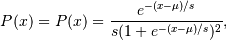

numpy.random.logistic¶
- numpy.random.logistic(loc=0.0, scale=1.0, size=None)¶
Draw samples from a Logistic distribution.
Samples are drawn from a Logistic distribution with specified parameters, loc (location or mean, also median), and scale (>0).
Parameters : loc : float
scale : float > 0.
size : {tuple, int}
Output shape. If the given shape is, e.g., (m, n, k), then m * n * k samples are drawn.
Returns : samples : {ndarray, scalar}
where the values are all integers in [0, n].
See also
- scipy.stats.distributions.logistic
- probability density function, distribution or cumulative density function, etc.
Notes
The probability density for the Logistic distribution is

where
 = location and
= location and  = scale.
= scale.The Logistic distribution is used in Extreme Value problems where it can act as a mixture of Gumbel distributions, in Epidemiology, and by the World Chess Federation (FIDE) where it is used in the Elo ranking system, assuming the performance of each player is a logistically distributed random variable.
References
[R203] Reiss, R.-D. and Thomas M. (2001), Statistical Analysis of Extreme Values, from Insurance, Finance, Hydrology and Other Fields, Birkhauser Verlag, Basel, pp 132-133. [R204] Weisstein, Eric W. “Logistic Distribution.” From MathWorld–A Wolfram Web Resource. http://mathworld.wolfram.com/LogisticDistribution.html [R205] Wikipedia, “Logistic-distribution”, http://en.wikipedia.org/wiki/Logistic-distribution Examples
Draw samples from the distribution:
>>> loc, scale = 10, 1 >>> s = np.random.logistic(loc, scale, 10000) >>> count, bins, ignored = plt.hist(s, bins=50)
# plot against distribution
>>> def logist(x, loc, scale): ... return exp((loc-x)/scale)/(scale*(1+exp((loc-x)/scale))**2) >>> plt.plot(bins, logist(bins, loc, scale)*count.max()/\ ... logist(bins, loc, scale).max()) >>> plt.show()